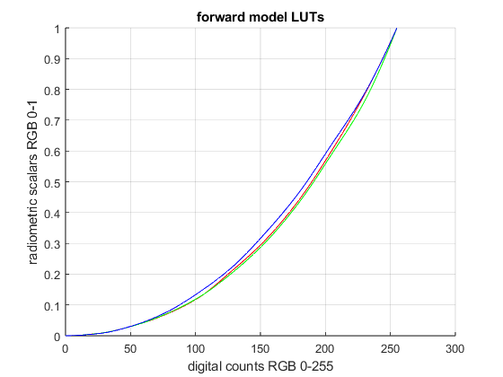
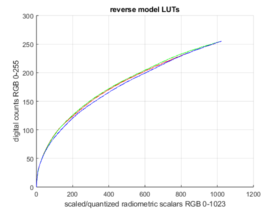
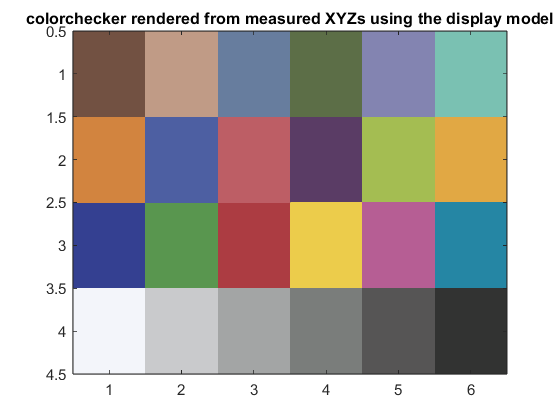

Project 6 Report
Team 5: Shakira Garnett, Hridiza Roy
Contents
Initialization
clear all; close all; clc; % load the CIE observer and illuminant data cie = loadCIEdata;
Step 3
load_ramps_data;
Step 4
x_rmax = ramp_R_XYZs(1, 11); x_gmax = ramp_G_XYZs(1, 11); x_bmax = ramp_B_XYZs(1, 11); y_rmax = ramp_R_XYZs(2, 11); y_gmax = ramp_G_XYZs(2, 11); y_bmax = ramp_B_XYZs(2, 11); z_rmax = ramp_R_XYZs(3, 11); z_gmax = ramp_G_XYZs(3, 11); z_bmax = ramp_B_XYZs(3, 11); x_k = XYZk(1); y_k = XYZk(2); z_k = XYZk(3); y_w = XYZw(2); M_fwd = [ x_rmax - x_k, x_gmax - x_k, x_bmax - x_k, x_k; ... y_rmax - y_k, y_gmax - y_k, y_bmax - y_k, y_k; ... z_rmax - z_k, z_gmax - z_k, z_bmax - z_k, z_k ] ./ y_w
M_fwd =
0.4992 0.2803 0.1413 0.0011
0.2371 0.7181 0.0502 0.0010
0.0006 0.0412 0.7446 0.0027
Step 5
M_inv = inv(M_fwd(1:3,1:3)); ramp_R_RSs = M_inv * ( (ramp_R_XYZs - XYZk) / y_w ); ramp_R_RSs = max(min(ramp_R_RSs, 1), 0); % clamp % define the 0-255 display values (digital counts) that correspond to ramp values ramp_DCs = round(linspace(0,255,11)); % interpolate the radiometric scalars across the full digital count range to form the forward LUTS RLUT_fwd = interp1(ramp_DCs,ramp_R_RSs(1,:),[0:1:255],'pchip'); ramp_G_RSs = M_inv * ( (ramp_G_XYZs - XYZk) / y_w ); ramp_G_RSs = max(min(ramp_G_RSs, 1), 0); % Repeat for green GLUT_fwd = interp1(ramp_DCs,ramp_G_RSs(2,:), [0:1:255],'pchip'); ramp_B_RSs = M_inv * ( (ramp_B_XYZs - XYZk) / y_w ); ramp_B_RSs = max(min(ramp_B_RSs, 1), 0); % Repeat for blue BLUT_fwd = interp1(ramp_DCs,ramp_B_RSs(3,:),[0:1:255],'pchip'); figure; hold on; % Plot each channel (Red, Green, and Blue) plot(0:255, RLUT_fwd, '-r'); % Red channel plot(0:255, GLUT_fwd, '-g'); % Green channel plot(0:255, BLUT_fwd, '-b'); % Blue channel % Labeling the plot xlabel('digital counts RGB 0-255'); ylabel('radiometric scalars RGB 0-1'); title('forward model LUTs'); grid on; hold off;
Step 6
M_rev = inv(M_fwd(1:3,1:3))
M_rev =
2.4460 -0.9318 -0.4014
-0.8104 1.7067 0.0388
0.0429 -0.0937 1.3412
Step 7
RLUT_rev = uint8(round(interp1(RLUT_fwd, 0:255, linspace(0,max(RLUT_fwd),1024), 'pchip', 0))); GLUT_rev = uint8(round(interp1(GLUT_fwd, 0:255, linspace(0,max(GLUT_fwd),1024), 'pchip', 0))); BLUT_rev = uint8(round(interp1(BLUT_fwd, 0:255, linspace(0,max(BLUT_fwd),1024), 'pchip', 0))); figure; hold on; % Plot each channel (Red, Green, and Blue) plot(0:1023, RLUT_rev, '-r'); % Red channel plot(0:1023, GLUT_rev, '-g'); % Green channel plot(0:1023, BLUT_rev, '-b'); % Blue channel % Labeling the plot xlabel('scaled/quantized radiometric scalars RGB 0-1023'); ylabel('digital counts RGB 0-255'); title('reverse model LUTs'); grid on; hold off;
Step 8
XYZw_disp = XYZw; XYZk_disp = XYZk; M_disp = M_rev; RLUT_disp = RLUT_rev; GLUT_disp = GLUT_rev; BLUT_disp = BLUT_rev; save('display_model.mat','XYZw_disp', 'XYZk_disp','M_disp','RLUT_disp','GLUT_disp','BLUT_disp');
Step 9
% Load the data data = load('munki_CC_XYZs_Labs.txt'); XYZn_D50 = ref2XYZ(cie.PRD, cie.cmf2deg, cie.illD50); munki_XYZs = data(:, 2:4)'; % Columns 2-4 for XYZ values, transpose to make it 3x24 munki_Labs = data(:, 5:7)'; % Columns 5-7 for Lab values, transpose to make it 3x24 munki_XYZs_disp = catBradford(munki_XYZs, XYZn_D50, XYZw_disp); adjusted_XYZs_disp = munki_XYZs_disp - XYZk_disp; munki_CC_RSs = (M_disp * adjusted_XYZs_disp) ./ 100; munki_CC_RSs = max(min(munki_CC_RSs, 1), 0); munki_CC_RSs_scaled = round(munki_CC_RSs * 1023 + 1); munki_CC_DCs(1,:) = RLUT_rev(munki_CC_RSs_scaled(1,:)); munki_CC_DCs(2,:) = GLUT_rev(munki_CC_RSs_scaled(2,:)); munki_CC_DCs(3,:) = BLUT_rev(munki_CC_RSs_scaled(3,:)); % visualize the CC XYZs using the display model pix = uint8(reshape(munki_CC_DCs', [6 4 3])); pix = fliplr(imrotate(pix, -90)); figure; image(pix); set(gca, 'FontSize', 11) title('colorchecker rendered from measured XYZs using the display model');
Step 10
munki_CC_DCs = uint8(double(munki_CC_DCs) * 100/255); table4ti1 = [(1:30)', [munki_CC_DCs'; zeros(3, 3); 100 * ones(3, 3)] ]; disp_XYZs = importdata('disp_model_test.ti3',' ', 20); CC_patches_XYZ = disp_XYZs.data(1:24, 5:7); disp_black_XYZ = disp_XYZs.data(25:27, 5:7); disp_whiteXYZ = disp_XYZs.data(28:30, 5:7); XYZk = mean(disp_black_XYZ, 1); XYZw = mean(disp_whiteXYZ, 1); display_Labs = XYZ2Lab(CC_patches_XYZ', XYZw'); DEab = deltaEab(display_Labs, munki_Labs); % print table print_display_model_error(munki_Labs, display_Labs, DEab);
Display model color error
XYZ_real->display_model->RGB_disp->display
Real vs. displayed ColorChecker Lab values
real displayed
patch # L a b L a b dEab
1 37.1865 14.9985 15.2592 37.2614 16.3788 11.6634 3.8524
2 65.8188 16.8695 18.0267 65.8875 17.9862 14.7529 3.4597
3 49.9949 -3.1841 -23.5159 48.6173 -5.4339 -26.8756 4.2716
4 42.6411 -15.3251 20.0423 41.8292 -13.1993 14.3545 6.1261
5 54.6852 9.6978 -26.7126 53.7770 6.0890 -28.9516 4.3429
6 71.2441 -33.1391 -0.5010 71.3770 -36.4762 -2.9641 4.1498
7 62.2558 34.1094 57.7774 61.8813 40.0053 51.2524 8.8021
8 39.5890 9.9980 -43.6388 38.0863 7.0100 -46.5533 4.4363
9 51.8424 48.1403 16.0636 51.0173 53.0937 12.8294 5.9730
10 29.4495 22.4255 -21.7661 29.8534 19.1610 -22.1735 3.3145
11 71.6264 -24.3441 57.6850 71.6131 -22.5815 51.2149 6.7059
12 72.2288 20.6039 69.0149 72.1863 27.5791 61.9033 9.9614
13 28.6402 18.5907 -51.4092 28.6998 11.1237 -51.7457 7.4748
14 54.6309 -39.5493 32.8341 54.5875 -38.4995 28.8870 4.0846
15 42.5988 54.6049 25.7315 42.4766 57.0637 21.5756 4.8304
16 82.4265 3.8689 78.8570 82.8065 11.4959 72.8810 9.6969
17 51.5476 49.5154 -14.3758 50.3447 52.4773 -16.8838 4.0633
18 49.3892 -26.5473 -28.6645 48.8198 -32.1163 -29.2721 5.6309
19 95.4458 -0.4414 0.0244 96.0919 0.0487 -3.4232 3.5418
20 80.0339 0.1309 -0.9345 79.4828 1.2266 -4.0189 3.3193
21 66.0107 -0.0004 -1.1463 65.5689 -0.3418 -3.5707 2.4878
22 50.5546 -0.6207 -0.9616 49.7249 -0.2129 -3.7596 2.9468
23 35.1532 -0.0632 -0.9708 34.7888 1.6090 -4.2625 3.7100
24 20.3224 -0.2858 -0.5603 22.0001 -0.3545 -1.2454 1.8135
min 1.8135
max 9.9614
mean 4.9582
Step 11
Include a listing of the XYZ2dispRGB function
function disp_RGBs = XYZ2dispRGB(display_model, XYZs, XYZn) load(display_model, 'XYZw_disp', 'XYZk_disp','M_disp','RLUT_disp','GLUT_disp','BLUT_disp'); XYZs_disp = catBradford(XYZs, XYZn, XYZw_disp); adjusted_XYZs_disp = XYZs_disp - XYZk_disp; CC_RSs = (M_disp * adjusted_XYZs_disp) ./ 100; CC_RSs = max(0, min(1, CC_RSs)); CC_RSs_scaled = round(CC_RSs * 1023 + 1); CC_DCs(1,:) = RLUT_disp(CC_RSs_scaled(1,:)); CC_DCs(2,:) = GLUT_disp(CC_RSs_scaled(2,:)); CC_DCs(3,:) = BLUT_disp(CC_RSs_scaled(3,:)); % visualize the CC XYZs using the display model pix = uint8(reshape(CC_DCs', [6 4 3])); pix = fliplr(imrotate(pix, -90)); figure; image(pix); set(gca, 'FontSize', 10.5); title('colorchecker rendered from measured XYZs using XYZ2dispRGB function'); disp_RGBs = uint8(CC_DCs); end
disp_RGBs = XYZ2dispRGB('display_model.mat', munki_XYZs, XYZn_D50);
Feedback
i. Who did which parts
Shakira - 3, 4, 5, 6, 7, 8, 9
Hridiza - 1, 2, 5 (minor), 9 (minor), 10, 11, 12
ii. Problems
- Keeping the matrix dimensions in mind, and figuring out when to transpose
- Images were getting clipped when trying to publish
iii. Valuable parts
- The "Info only" sections that gave more context about what we were doing
- Learning how to practically derive LUTs and create reverse models
iv. Improvements
- Minor: Perhaps we should test that the output from XYZ2dispRGB (disp_RGBs) is as expected (Currently we are just testing the plot)